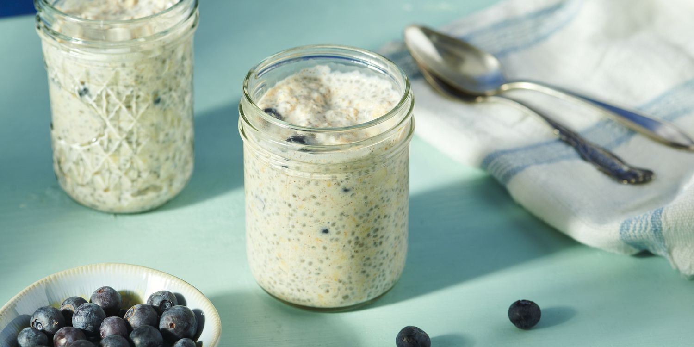

Those recipes are common, but I have modified them to suit my needs as a person with Type 1 diabetes. The adjustments are intended to help manage blood sugar levels and have been shown to help lower glucose levels and LDL cholesterol.
